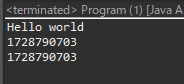
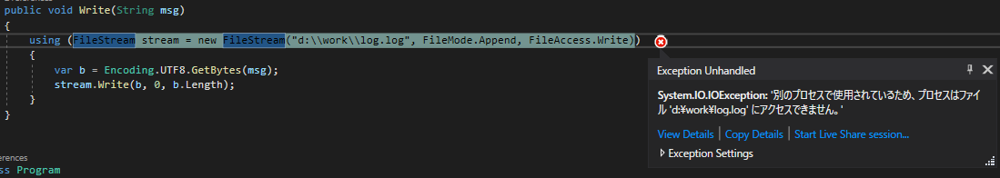

[Design pattern] 1-1. シングルトンパターン(Singleton pattern)
こんにちは。明月です。
この投稿はデザインパターンのシングルトンパターン(Singleton pattern)に関する説明です。
シングルトンパターンはデザインパターンの中で一番有名なパターンです。デザインパターンを聞いたことがなくてもシングルトンパターン(Singleton pattern)を聞いたことがあるほど有名なパターンです。
シングルトンパターンはクラスのインスタンスをプログラム実行中で一回だけ生成して続けて再使用するパターンです。利点ではクラスのデータを変わらずにずっと使うかすべてのオブジェクトからデータを共有しなければならない状況で使います。
C/C++例から確認しましょう。
// 重複検査前処理文
#pragma once
// ヘッダー宣言
#include <stdio.h>
#include <iostream>
using namespace std;
// クラス宣言
class Node
{
private:
// シングルトン変数設定
static Node* singleton;
// コンストラクタをprivateに設定して外部から生成禁止
Node() {}
protected:
public:
// インスタンスを取得する関数
static Node* getInstance() {
// シングルトン変数がnullなら
if (singleton == nullptr) {
// メモリ割り当て(クラス内部なのでインスタンス生成が可能)
singleton = new Node();
}
// ポインタ返却
return singleton;
}
// 出力関数
void print() {
// 画面出力
cout << "hello world" << endl;
}
};
// シングルトンの変数の設定を初期化
Node* Node::singleton = nullptr;
// 実行関数
int main()
{
// インスタンス取得
Node* node1 = Node::getInstance();
// インスタンス取得
Node* node2 = Node::getInstance();
// 関数実行
node1->print();
// メモリのアドレスを出力
printf("%d\n", node1);
// メモリのアドレスを出力
printf("%d\n", node2);
// Nodeインスタンスのメモリ解除
delete Node::getInstance();
return 0;
}
シングルトンの特性はコンストラクタをprivateに設定することが重要です。コンストラクタをprivateに設定するとクラス外部からインスタンス生成をできません。
そしてクラスのインスタンスはプログラムが終了する時まで保持しなければならないので、staticで宣言してクラス内部で管理します。
また、static関数(getInstance())でクラスのインスタンスを生成してsingleton変数に管理すればインスタンスを一回生成して再使用するシングルトンが作られます。
上の結果をみればnode1とnode2のメモリアドレスが同じです。
つまり、Node::getInstance()でインスタンスを取得すれば同じクラスが返却します。
// 実行関数があるクラス
public class Program {
// 実行関数
public static void main(String[] args) {
// Nodeインスタンス取得
Node node1 = Node.getInstance();
// Nodeインスタンス取得
Node node2 = Node.getInstance();
// 関数実行
node1.print();
// node1インスタンスのメモリアドレスを出力
System.out.println(node1.hashCode());
// node2インスタンスのメモリアドレスを出力
System.out.println(node2.hashCode());
}
}
// Nodeクラス
class Node {
// シングルトン変数設定
private static Node singleton;
// コンストラクタをprivateに設定、つまり外部クラスにはインスタンス生成ができない
private Node() {}
// インスタンス取得関数
public static Node getInstance() {
// シングルトン変数がnullならインスタンスを生成
if (singleton == null) {
// インスタンスを生成
singleton = new Node();
}
// インスタンス返却
return singleton;
}
// 出力関数
public void print() {
// コンソール出力
System.out.println("Hello world");
}
}

Javaのシングルトンパターンもコンストラクタをprivateに設定してクラスインスタンスをもっている変数をprivate staticで宣言します。
つまり、プログラムが終了する時まで変数のインスタンスが保持されます。
Javaのhashcodeを出力値をみれば同じ値が出力することを確認できます。
つまり、同じクラスという意味です。
using System;
namespace TestExample1
{
// Nodeクラス
class Node
{
// シングルトン変数設定
private static Node singleton;
// コンストラクタをprivateに設定、つまり外部クラスにはインスタンス生成ができない
private Node() { }
// インスタンス取得関数
public static Node GetInstance()
{
// シングルトン変数がnullならインスタンスを生成
if (singleton == null)
{
// インスタンスを生成
singleton = new Node();
}
// インスタンス返却
return singleton;
}
// 出力関数
public void Print()
{
// コンソール出力
Console.WriteLine("Hello world");
}
}
// 実行関数があるクラス
class Program
{
// 実行関数
static void Main(string[] args)
{
// Nodeインスタンス取得
Node node1 = Node.GetInstance();
// Nodeインスタンス取得
Node node2 = Node.GetInstance();
// 関数実行
node1.Print();
// node1インスタンスのメモリアドレスを出力
Console.WriteLine(node1.GetHashCode());
// node2インスタンスのメモリアドレスを出力
Console.WriteLine(node2.GetHashCode());
Console.WriteLine("Press Any Key...");
Console.ReadKey();
}
}
}
C#にもコンストラクタをprivateに設定してGetInstance()関数を利用してインスタンスを取得します。
結果も同じHashCodeが出力することで同じクラスインスタンスということを確認できます。
シングルトンパターンは普通リソースを扱うクラスでよく使います。
例えば、File IOや通信Socketクラスと共に使います。
なぜなら一つのFileを読み込んで書き込むクラスを様々なインスタンスで生成して接続すればconnection errorが発生します。
ログシステムがその例です。ログクラスを様々なインスタンス生成してファイル書き込むすればエラーが発生します。
using System;
using System.IO;
using System.Text;
using System.Threading;
namespace TestExample1
{
// ログクラス例
class LogSystem
{
// ファイルにメッセージを作成する関数
public void Write(String msg)
{
// Streamを生成
using (var stream = new FileStream("d:\\work\\log.log", FileMode.Append, FileAccess.Write))
{
// StringをUTF8タイプに変換
var b = Encoding.UTF8.GetBytes(msg);
// ファイルにメッセージを作成
stream.Write(b, 0, b.Length);
}
}
}
// 実行関数があるクラス
class Program
{
// 実行関数
static void Main(string[] args)
{
// スレッド
ThreadPool.QueueUserWorkItem((_) =>
{
// ログクラス例のインスタンス生成
var log = new LogSystem();
// 0から99まで
for (int i = 0; i < 100; i++)
{
// メッセージ作成
log.Write(i.ToString() + "\r\n");
}
});
// スレッド
ThreadPool.QueueUserWorkItem((_) =>
{
// ログクラス例のインスタンス生成
var log = new LogSystem();
// 0から99まで
for (int i = 0; i < 100; i++)
{
// メッセージ作成
log.Write(i.ToString() + "\r\n");
}
});
Console.WriteLine("Press Any Key...");
Console.ReadKey();
}
}
}

一つのクラスですが、各のインスタンスを生成するとIOExceptionが発生します。
ソケットも一つのインスタンスでportを開いて待機中ですが、別のインスタンスで接続すればport使用中というエラーが発生します。
その状況を解けるために一つのインスタンスを保持しなければならないですが、その時にシングルトンパターンを使うと良いです。
ここまでデザインパターンのシングルトンパターン(Singleton pattern)に関する説明でした。
ご不明なところや間違いところがあればコメントしてください。
- [Design pattern] 1-3. ファクトリメソッドパターン(Factory method pattern)2021/06/23 19:45:37
- [Design pattern] 1-2. ビルダーパターン(Builder pattern)2021/06/11 19:06:28
- [Design pattern] 1-1. シングルトンパターン(Singleton pattern)2021/06/09 19:40:05
- [Design Pattern] デザインパターンの紹介2021/06/08 20:42:36
- [C#] 48. IEnumerableとIEnumerator、そしてyieldキーワード2021/10/11 19:49:33
- [C#] 47. Nugetを使い方(外部ライブラリ)とデータベース(MariaDB(Mysql))を使い方、そしてトランザクション(Transaction)2021/10/08 18:58:57
- [Window] MariaDBをインストールする方法2021/10/08 18:56:05
- [C#] 46. データベース(MSSQL)に接続する方法2021/10/07 18:39:58
- [C#] 45. ネットワークソケット通信(Socket)を使い方2021/10/06 19:06:25
- [C#] 44. ファイル(FileInfo)とディレクトリ(DirectoryInfo)を扱い2021/10/05 19:29:34
- [C#] 43. ストリーム(Stream)とバイナリ(byte[])、エンコード(Encoding)、そしてusingを使い方とIDisposableインターフェース2021/10/04 18:33:04
- [C#] 42. ファイルを扱い(IO)とファイルメタデータ(FileInfo)を使い方2021/10/01 20:10:21
- [C#] 41. Taskクラスとasync、awaitを使い方2021/10/01 18:59:14
- [Javascript ] WebのFull calendar(スケジュールカレンダー)の使い方法2021/07/15 21:35:36
- [Java] 56. Web serviceのサーブレット(Servlet)で初期化作業(properties設定)2021/07/02 17:10:36
- [Java] 55. Spring frameworkに文字化けを解決する方法(Encoding設定)2021/06/30 16:37:16
- [Java] 54. Spring frameworkでWeb filterを使う方法2021/06/29 18:25:12
- [Java] 53. ウェブサービス(Web service)でエラーページを処理する方法2021/06/25 13:35:54
- [Design pattern] 1-3. ファクトリメソッドパターン(Factory method pattern)2021/06/23 19:45:37